Путь «Дверь»
От слабой к сильной: Seq 9 «Ученик» → Seq 1 «Ключ Звёзд». Сменить путь можно на «Шут» или «Ошибка» — с Seq 5 и сильнее, зельем на ступень выше (как).
| Seq | Последовательность | Ступень сервера |
|---|---|---|
| 9 | Ученик | II |
| 8 | Трюкач | III |
| 7 | Астролог | IV |
| 6 | Писарь | V |
| 5 | Путешественник | VI |
| 4 | Тайный Чародей | VII |
| 3 | Скиталец | VIII |
| 2 | Странник Миров | — |
| 1 | Ключ Звёзд | — |
У каждой последовательности: зелье и его ингредиенты (главный — первым), способности, которые она открывает, и отыгрыш — действия, которые переваривают зелье. Ингредиенты указаны с двумя самыми доступными источниками; все — по ссылке. Ингредиенты Seq 9–6 этого пути бывают и в товарах у жителя Торговец Потусторонних — у каждого по 2 случайных предложения на уровень (цены).
Seq 9 · Ученик
Зелье  Ученик Зелье, формула
Ученик Зелье, формула  Ученик Рецепт зелья (Последовательность 9). Эта Seq нужна для ступени II.
Ученик Рецепт зелья (Последовательность 9). Эта Seq нужна для ступени II.
Ингредиенты
- Иллюзорный кристалл — крафт: верстак; сундук: Постройки Мира духов — 55 %. Все источники (4)
 Гидролат козлобородника — пустая бутылка: Коза (биом «горы») — 50 % за попытку, бутылка остывает 10 с; сундук: Постройки Мира духов — 38 %. Все источники (3)
Гидролат козлобородника — пустая бутылка: Коза (биом «горы») — 50 % за попытку, бутылка остывает 10 с; сундук: Постройки Мира духов — 38 %. Все источники (3) Вода древнего колодца — пустая бутылка: источник воды (в деревне) — 100 % за попытку, бутылка остывает 0,5 с; сундук: Постройки Мира духов — 35 %. Все источники (3)
Вода древнего колодца — пустая бутылка: источник воды (в деревне) — 100 % за попытку, бутылка остывает 0,5 с; сундук: Постройки Мира духов — 35 %. Все источники (3) Цветок, выросший из трупа — крафт: верстак; существо мода: Мрачный Жнец (водится: Мир духов, Подземный мир; приходит и Ночью Мира духов) — 9,6 % за убийство. Все источники (3)
Цветок, выросший из трупа — крафт: верстак; существо мода: Мрачный Жнец (водится: Мир духов, Подземный мир; приходит и Ночью Мира духов) — 9,6 % за убийство. Все источники (3) Почва, осквернённая Миром духов — блок: Почва душ (лопатой; только природный блок) — 0,2 % за блок; блок: Земля (в Мире духов или в Клочке Мира духов (верхний мир)) — 40 % за блок. Все источники (5)
Почва, осквернённая Миром духов — блок: Почва душ (лопатой; только природный блок) — 0,2 % за блок; блок: Земля (в Мире духов или в Клочке Мира духов (верхний мир)) — 40 % за блок. Все источники (5)
Способности
- Медитация — Медитировать, восполняя духовность
- Открытие двери — Примените на сплошной стене, чтобы пройти сквозь неё
- Физическое усиление (пассивная)
Отыгрыш — переваривание за действие и перерыв между засчитанными:
- Использовать кафедру — 1,9 %, раз в 20 с
- Использовать стол зачаровывания — 0,95 %, раз в 10 с
- Использовать картографический стол — 0,47 %, раз в 10 с
- Создать книгу — 0,47 %, раз в 20 с
- Прочитать подписанную книгу — 0,76 %, раз в 20 с
- Использовать верстак — 0,19 %, раз в 10 с
- Открыть резной книжный шкаф — 0,47 %, раз в 15 с
- Создать бумагу — 0,28 %, раз в 15 с
Seq 8 · Трюкач
Зелье Трюкач Зелье, формула  Трюкач Рецепт зелья (Последовательность 8). Эта Seq нужна для ступени III.
Трюкач Рецепт зелья (Последовательность 8). Эта Seq нужна для ступени III.
Ингредиенты
 Желудочный мешок пожирателя духов — добыча: Разоритель — 20 % за убийство игроком; существо мода: Злоуст (водится: Мир духов; приходит и Ночью Мира духов) — 23 % за убийство. Все источники (3)
Желудочный мешок пожирателя духов — добыча: Разоритель — 20 % за убийство игроком; существо мода: Злоуст (водится: Мир духов; приходит и Ночью Мира духов) — 23 % за убийство. Все источники (3) Эфирное масло граба — пустая бутылка: Дубовое бревно (в биоме: Березняк, Реликтовый березняк) — 50 % за попытку, бутылка остывает 1 с. Все источники (2)
Эфирное масло граба — пустая бутылка: Дубовое бревно (в биоме: Березняк, Реликтовый березняк) — 50 % за попытку, бутылка остывает 1 с. Все источники (2) Порошок травы-струны — блок: Паутина — 50 % за блок. Все источники (2)
Порошок травы-струны — блок: Паутина — 50 % за блок. Все источники (2)- Гидролат козлобородника — пустая бутылка: Коза (биом «горы») — 50 % за попытку, бутылка остывает 10 с; сундук: Постройки Мира духов — 38 %. Все источники (3)
- Вода древнего колодца — пустая бутылка: источник воды (в деревне) — 100 % за попытку, бутылка остывает 0,5 с; сундук: Постройки Мира духов — 35 %. Все источники (3)
Способности
- Заклинания — Разные заклинания Трюкача. Бейте врагов током, насылайте ветер, ослепляйте светом или замораживайте
Отыгрыш — переваривание за действие и перерыв между засчитанными:
- Использовать нотный блок — 0,42 %, раз в 5 с
- Запустить фейерверк — 0,17 %, раз в 1 с
- Убить исподтишка — 0,84 %, раз в 2 с
- Убить моба, не нацеленного на вас — 0,5 %, раз в 5 с
- Выпить зелье невидимости — 0,42 %, раз в 5 с
- Бросить жемчуг Края — 0,34 %, раз в 5 с
- Поставить табличку — 0,34 %, раз в 15 с
Seq 7 · Астролог
Зелье 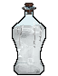 Астролог Рецепт зелья (Последовательность 7). Эта Seq нужна для ступени IV.
Астролог Рецепт зелья (Последовательность 7). Эта Seq нужна для ступени IV.
Ингредиенты
 Метеоритный кристалл — крафт: верстак; сундук: Постройки Мира духов — 35 %. Все источники (4)
Метеоритный кристалл — крафт: верстак; сундук: Постройки Мира духов — 35 %. Все источники (4) Порошок ломоноса — блок: Хаустония серая (ножницами) — 25 % за блок. Все источники (2)
Порошок ломоноса — блок: Хаустония серая (ножницами) — 25 % за блок. Все источники (2) Засохшая виноградная лоза — крафт: костёр. Все источники (2)
Засохшая виноградная лоза — крафт: костёр. Все источники (2) Глаза осьминога — существо мода: Мурлок (водится: океаны) — 3,7 % за убийство. Все источники (2)
Глаза осьминога — существо мода: Мурлок (водится: океаны) — 3,7 % за убийство. Все источники (2) Крепкий спирт — крафт: верстак. Все источники (2)
Крепкий спирт — крафт: верстак. Все источники (2)
Способности
- Гадание
- Духовное зрение
Отыгрыш — переваривание за действие и перерыв между засчитанными:
- Взглянуть на компас — 0,37 %, раз в 8 с
- Посмотреть в подзорную трубу — 0,37 %, раз в 8 с
- Использовать картографический стол — 0,74 %, раз в 10 с
- Стоять на большой высоте — 0,22 %, раз в 20 с
- Создать часы — 0,37 %, раз в 20 с
- Создать компас — 0,37 %, раз в 20 с
- Встретить рассвет — 0,37 %, раз в 1 мин
- Использовать датчик дневного света — 0,29 %, раз в 15 с
Seq 6 · Писарь
Зелье 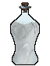 Писарь Рецепт зелья (Последовательность 6). Эта Seq нужна для ступени V.
Писарь Рецепт зелья (Последовательность 6). Эта Seq нужна для ступени V.
Ингредиенты
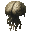
Целый мозг Асмана — крафт: верстак; существо мода: Асман (водится: Мир духов, океаны) — 73 % за убийство. Все источники (3) Страницы дневника старше 22 лет — житель: Библиотекарь (уровень «подмастерье») — 20 изумрудов, до 4 сделок; существо мода: Демон знания (водится: Мир духов, океаны; приходит и Ночью Мира духов) — 5,6 % за убийство. Все источники (3)
Страницы дневника старше 22 лет — житель: Библиотекарь (уровень «подмастерье») — 20 изумрудов, до 4 сделок; существо мода: Демон знания (водится: Мир духов, океаны; приходит и Ночью Мира духов) — 5,6 % за убийство. Все источники (3) Ртуть — крафт: плавильная печь; сундук: Постройки Мира духов — 18 %. Все источники (4)
Ртуть — крафт: плавильная печь; сундук: Постройки Мира духов — 18 %. Все источники (4) Эфирное масло жимолости — крафт: верстак. Все источники (2)
Эфирное масло жимолости — крафт: верстак. Все источники (2) Морская, озёрная и ледниковая вода — крафт: верстак; сундук: Постройки Мира духов — 16 %. Все источники (3)
Морская, озёрная и ледниковая вода — крафт: верстак; сундук: Постройки Мира духов — 16 %. Все источники (3)
Способности
- Запись — Записать способность Потустороннего для однократного применения
Отыгрыш — переваривание за действие и перерыв между засчитанными:
- Использовать кафедру — 1,3 %, раз в 20 с
- Создать карту — 0,95 %, раз в 15 с
- Применить «Запись» — 1,3 %, раз в 15 с
- Создать книгу — 0,32 %, раз в 20 с
- Создать бумагу — 0,25 %, раз в 10 с
- Использовать картографический стол — 0,63 %, раз в 10 с
- Взаимодействовать с книгой — 0,38 %, раз в 15 с
- Поставить табличку — 0,32 %, раз в 15 с
Seq 5 · Путешественник
Зелье 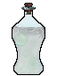 Путешественник Рецепт зелья (Последовательность 5). Эта Seq нужна для ступени VI.
Путешественник Рецепт зелья (Последовательность 5). Эта Seq нужна для ступени VI.
Ингредиенты
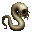
Демонический червь Сискун — блок: Заражённые каменные кирпичи, Заражённые замшелые каменные кирпичи, Заражённые потрескавшиеся каменные кирпичи, Заражённые резные каменные кирпичи (в структуре «Крепость») — 15 % за блок; сундук: Постройки Мира духов — 15 %. Все источники (3) Порошок останков пойманного призрака — добыча: Скелет (в биоме: Долина песка душ) — 2 % за убийство игроком; сундук: Постройки Мира духов — 15 %. Все источники (3)
Порошок останков пойманного призрака — добыча: Скелет (в биоме: Долина песка душ) — 2 % за убийство игроком; сундук: Постройки Мира духов — 15 %. Все источники (3) Порошок мелиссы — сундук: Библиотека крепости — 30 %; сундук: Темница — 12 %.
Порошок мелиссы — сундук: Библиотека крепости — 30 %; сундук: Темница — 12 %. Звёздная карта, начертанная кровью духа — крафт: верстак; сундук: Постройки Мира духов — 15 %. Все источники (3)
Звёздная карта, начертанная кровью духа — крафт: верстак; сундук: Постройки Мира духов — 15 %. Все источники (3) Кровь Бестеневого демонического волка — добыча: Волк (ночью; во второй руке пустая бутылка, она тратится) — 35 % за убийство игроком; существо мода: Мрачный Жнец (водится: Мир духов, Подземный мир; приходит и Ночью Мира духов) — 6,5 % за убийство. Все источники (4)
Кровь Бестеневого демонического волка — добыча: Волк (ночью; во второй руке пустая бутылка, она тратится) — 35 % за убийство игроком; существо мода: Мрачный Жнец (водится: Мир духов, Подземный мир; приходит и Ночью Мира духов) — 6,5 % за убийство. Все источники (4)
Способности
- Мерцание — Мгновенно телепортироваться на короткое расстояние
- Дверь путешественника — Пройти через Мир духов к месту назначения или войти в него самому
- Невидимая рука — Толкать и притягивать существ невидимой рукой
- Чутьё Мира духов (пассивная)
Отыгрыш — переваривание за действие и перерыв между засчитанными:
- Войти в Незер — 1,1 %, раз в 30 с
- Плыть на лодке — 0,26 %, раз в 10 с
- Ехать в вагонетке — 0,26 %, раз в 10 с
- Применить «Дверь путешественника» — 1,1 %, раз в 10 с
- Бросить жемчуг Края — 0,21 %, раз в 5 с
- Плыть под водой — 0,053 %, раз в 15 с
- Бежать — 0,053 %, раз в 10 с
- Использовать карту — 0,26 %, раз в 15 с
- Поймать рыбу — 0,16 %, раз в 10 с
Seq 4 · Тайный Чародей
Зелье 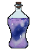 Тайный Чародей Рецепт зелья (Последовательность 4). Эта Seq нужна для ступени VII.
Тайный Чародей Рецепт зелья (Последовательность 4). Эта Seq нужна для ступени VII.
Ингредиенты
- Глаз золотого феникса — существо мода: Дервиш (водится: Мир духов; приходит и Ночью Мира духов) — 8,2 % за убийство.
 Гнездо демонического червя Сискун — блок: Грязь, Корнистая земля (лопатой; в биоме: Болото, Мангровое болото; только природный блок) — 8 % за блок; существо мода: Злоуст (водится: Мир духов; приходит и Ночью Мира духов) — 6,7 % за убийство. Все источники (4)
Гнездо демонического червя Сискун — блок: Грязь, Корнистая земля (лопатой; в биоме: Болото, Мангровое болото; только природный блок) — 8 % за блок; существо мода: Злоуст (водится: Мир духов; приходит и Ночью Мира духов) — 6,7 % за убийство. Все источники (4) Пепел Врат Анх — крафт: костёр; сундук: Постройки Мира духов — 35 %. Все источники (5)
Пепел Врат Анх — крафт: костёр; сундук: Постройки Мира духов — 35 %. Все источники (5) Грецкий орех — блок: Листья тёмного дуба — 3 % за блок; сундук: Дом в деревне на равнине — 25 %. Все источники (5)
Грецкий орех — блок: Листья тёмного дуба — 3 % за блок; сундук: Дом в деревне на равнине — 25 %. Все источники (5) Озёрная вода, только что отразившая космос — пустая бутылка: источник воды (ночью, без дождя, под открытым небом и не в океане) — 80 % за попытку, бутылка остывает 1 с; сундук: Постройки Мира духов — 32 %. Все источники (4)
Озёрная вода, только что отразившая космос — пустая бутылка: источник воды (ночью, без дождя, под открытым небом и не в океане) — 80 % за попытку, бутылка остывает 1 с; сундук: Постройки Мира духов — 32 %. Все источники (4)
Способности
- Мифическая форма
- Сокрытие пространства — Отделить фиксированное пространство. Применение крадучись снимает все сокрытые пространства. «Обрушить пространства» уничтожает всё внутри и ранит существ.
- Хранение тайн — Дать себе и союзникам рядом некоторую защиту от гадания.
- Преображение в двери — Обратиться в иллюзорные двери, уходя от урона
- Остаточные образы мерцания — Пока активно, при каждом мерцании остаётся остаточный образ, атакующий противника записанными способностями. Расходует Червя звёзд.
- Изгнание — Изгнать врага в хаотическое пространство; вскоре он вернётся
- Дверь-двойник — Создать дверь-двойника: следующий урон перейдёт на дверь, минуя вас
Отыгрыш — переваривание за действие и перерыв между засчитанными:
- Применить «Сокрытие пространства» — 0,84 %, раз в 15 с
- Использовать картографический стол — 0,42 %, раз в 15 с
- Не спать всю ночь — 0,63 %, раз в 30 с
- Убить моба, не нацеленного на вас — 0,21 %, раз в 5 с
- Открыть сундук Края — 0,34 %, раз в 10 с
- Расчистить подозрительный блок — 0,34 %, раз в 20 с
- Убить исподтишка — 0,25 %, раз в 5 с
Seq 3 · Скиталец
Зелье 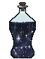 Скиталец Рецепт зелья (Последовательность 3). Эта Seq нужна для ступени VIII.
Скиталец Рецепт зелья (Последовательность 3). Эта Seq нужна для ступени VIII.
Ингредиенты
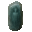
Кристалл, оставленный Туманным наблюдателем — существо мода: Полупрозрачный чародей (водится: Мир духов; приходит и Ночью Мира духов) — 4,5 % за убийство. Гной Блуждающей кожи — крафт: верстак; существо мода: Гнойная рука (водится: Мир духов) — 5,7 % за убийство. Все источники (4)
Гной Блуждающей кожи — крафт: верстак; существо мода: Гнойная рука (водится: Мир духов) — 5,7 % за убийство. Все источники (4) Веко Туманного наблюдателя — крафт: верстак; существо мода: Полупрозрачный чародей (водится: Мир духов; приходит и Ночью Мира духов) — 4,5 % за убийство. Все источники (4)
Веко Туманного наблюдателя — крафт: верстак; существо мода: Полупрозрачный чародей (водится: Мир духов; приходит и Ночью Мира духов) — 4,5 % за убийство. Все источники (4) Семена белой горчицы — добыча: Кадавр (убить игроком) — 6 % за убийство; сундук: Пустынный храм — 35 %. Все источники (4)
Семена белой горчицы — добыча: Кадавр (убить игроком) — 6 % за убийство; сундук: Пустынный храм — 35 %. Все источники (4) Звёздная вода с места ритуала — крафт: верстак; сундук: Постройки Мира духов — 34 %. Все источники (5)
Звёздная вода с места ритуала — крафт: верстак; сундук: Постройки Мира духов — 34 %. Все источники (5)
Способности
- Скитание — Скитаться между измерениями
- Пространственная клетка — Запереть врагов в пространственной клетке, из которой не вырваться. Можно оставить переднюю сторону открытой, чтобы лишь ограничить их движение
- Разрыв пространства — Разорвать пространство, отдав его на поглощение пустоте
- Путевая точка — Ставить путевые точки для телепортации к ним. Переключайте точки крадучись.
- Невосприимчивость к Пустоте (пассивная)
Отыгрыш — переваривание за действие и перерыв между засчитанными:
- Применить «Скитание» — 0,63 %, раз в 10 с
- Войти в Незер — 0,47 %, раз в 20 с
- Поймать рыбу — 0,16 %, раз в 10 с
- Плыть под водой — 0,063 %, раз в 15 с
- Выудить сокровище — 0,25 %, раз в 30 с
- Съесть подозрительное рагу — 0,13 %, раз в 10 с
- Бежать — 0,032 %, раз в 10 с
Seq 2 · Странник Миров
Зелье 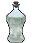 Странник Миров Рецепт зелья (Последовательность 2).
Странник Миров Рецепт зелья (Последовательность 2).
Ингредиенты
 Живая пустота — существо мода: Погибель (водится: Мир духов; приходит и Ночью Мира духов) — 5 % за убийство.
Живая пустота — существо мода: Погибель (водится: Мир духов; приходит и Ночью Мира духов) — 5 % за убийство.- Червь звезды — существо мода: Погибель (водится: Мир духов; приходит и Ночью Мира духов) — 1,7 % за убийство.
- Червь времени — существо мода: Погибель (водится: Мир духов; приходит и Ночью Мира духов) — 1,7 % за убийство.
 Червь духа — блок: Мицелий (лопатой; только природный блок) — 12 % за блок; существо мода: Погибель (водится: Мир духов; приходит и Ночью Мира духов) — 5 % за убийство. Все источники (4)
Червь духа — блок: Мицелий (лопатой; только природный блок) — 12 % за блок; существо мода: Погибель (водится: Мир духов; приходит и Ночью Мира духов) — 5 % за убийство. Все источники (4) Эндер-жемчуг — обычный предмет
Эндер-жемчуг — обычный предмет
Способности
- Власть ангела — Ангельская сила: странствуйте по Миру духов и сокрушайте артефакты
- Символизация — Обратиться в сонм символов, обретая полёт и резко повышая скорость передвижения
- Запечатывание — Запечатать врагов: они не смогут двигаться и применять способности
- Тиражирование — Тиражировать способности Потусторонних для многократного применения
- Поле искажения — Создать область, где враги хаотично телепортируются и с трудом применяют способности
- Миниатюризация области — Уменьшить область или существо и хранить их в инвентаре. Существо сильнее вас вырывается и возвращает свой размер. Дверь последовательности 0 уменьшить нельзя. Уменьшение области работает и при выключенных разрушениях.
- Власть телепортации — Начальная власть над телепортацией: мгновенно перемещать себя и других
- Искажение пространства — Создать местную аномалию, затягивающую всё вокруг.
- Карманное измерение — Создать карманное измерение внутри другого измерения; без вашей помощи туда никто не войдёт
Отыгрыш — переваривание за действие и перерыв между засчитанными:
- Войти в Незер — 0,21 %, раз в 20 с
- Войти в Край — 0,21 %, раз в 20 с
- Поторговать с жителем — 0,32 %, раз в 20 с
- Создать карту — 0,21 %, раз в 15 с
- Вернуться из измерения — 0,21 %, раз в 30 с
- Использовать якорь возрождения — 0,21 %, раз в 20 с
- Создать око Края — 0,21 %, раз в 20 с
Seq 1 · Ключ Звёзд
Зелье 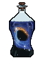 Ключ Звёзд Рецепт зелья (Последовательность 1).
Ключ Звёзд Рецепт зелья (Последовательность 1).
Ингредиенты
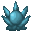
Ключ Звёзд Характеристика Потустороннего (Последовательность 1) — характеристика Потустороннего Компас, связанный с Астральным миром — крафт: верстак; существо мода: Погибель (водится: Мир духов; приходит и Ночью Мира духов) — 1,7 % за убийство. Все источники (4)
Компас, связанный с Астральным миром — крафт: верстак; существо мода: Погибель (водится: Мир духов; приходит и Ночью Мира духов) — 1,7 % за убийство. Все источники (4) Ядро блуждающего астероида — блок: Обсидиан (только природный блок) — 3 % за блок; сундук: Постройки Мира духов — 24 %. Все источники (5)
Ядро блуждающего астероида — блок: Обсидиан (только природный блок) — 3 % за блок; сундук: Постройки Мира духов — 24 %. Все источники (5) Любимые еда или питьё — подарок: Подарок жителей Герою деревни — 25 %; сундук: Постройки Мира духов — 11 %.
Любимые еда или питьё — подарок: Подарок жителей Герою деревни — 25 %; сундук: Постройки Мира духов — 11 %. Часы — обычный предмет
Часы — обычный предмет
Способности
- Чёрная дыра — Искривить и разбить пространство, время и свет, создав чёрную дыру
- Пространственно-временной лабиринт — Заточить противников в пространственно-временном лабиринте. Не успеют выбраться — не выживут.
- Телепорт к игроку — Телепортироваться к выбранному игроку
- Дробление пространства — Призвать иллюзорные планеты, создающие чудовищное притяжение, искажающее время и дробящее пространство перед вами
Отыгрыш — переваривание за действие и перерыв между засчитанными:
- Применить «Власть Двери» — 0,32 %, раз в 20 с
- Не спать всю ночь — 0,11 %, раз в 30 с
- Поторговать с жителем — 0,11 %, раз в 20 с
- Стоять на большой высоте — 0,053 %, раз в 30 с
- Создать сундук Края — 0,084 %, раз в 30 с